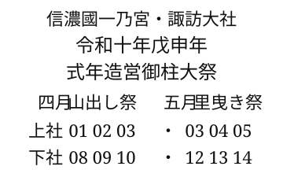

令和十年戊申年 諏訪大社 式年造営御柱大祭
このページでは2028年の春に行われる諏訪大社の御柱大祭に向けた動きを整理していきます。
2025年4月 御柱祭日程発表
@ymune:
2025年4月4日に諏訪大社、大総代会が会見。
2028年(令和十戊申年)の御柱祭の日程を発表。従来より1年前倒し。
山出しは上社が4月1日から3日、下社が4月8日から10日。
里曳きは上社が5月3日から5日。下社が5月12日から14日。
会見は下社秋宮参集殿で大総代会からは増沢哲議長(69)、諏訪大社からは4月1日付で北島和孝前宮司の後任として権宮司から昇格就任した村上益弘宮司(56)らが出席。2028年(令和十戊申年)の御柱祭の日程を発表。従来より1年前倒し。
山出しは上社が4月1日から3日、下社が4月8日から10日。
里曳きは上社が5月3日から5日。下社が5月12日から14日。
下社の仮見立ては25年5月12日に下諏訪町の東俣国有林で行われる。
その後、26年の5月か6月に本見立て、27年の5月か6月に伐採の見込み。
上社は年内に調達場所を決め、26年5月か6月に仮見立て、27年の5月か6月に本見立ての見込み。

2025年5月 下社仮見立て
@ymune:
2025年5月12日に下社の仮見立てが下諏訪町の東俣国有林で行われる。約420人が参加。
慣例通り、春一から始め、8本の候補木を選定。
秋一候補木は高さ22m、目通り周囲3.15m。春一は高さ23m、目通り周囲3.05m。
慣例通り、春一から始め、8本の候補木を選定。
秋一候補木は高さ22m、目通り周囲3.15m。春一は高さ23m、目通り周囲3.05m。
2026年3月 上社用材調達候補地発表
@ymune:
2026年3月28日に諏訪大社上社本宮で行なわれた会見で次回令和10年御柱祭に向けた上社本仮見立てを5月18日(予備日5月21日)に行う事を発表。
調達候補地は伊那市高遠町藤沢地区の私有林。私有林からの御柱用材の切出しは明治以降で初。
調達候補地は伊那市高遠町藤沢地区の私有林。私有林からの御柱用材の切出しは明治以降で初。
@ymune:
伊那市からの調達も初。伊那谷(上伊那地区)からは16年の辰野町横川国有林以来。
それにしても御柱祭って、結構何でもありだなと、改めて思う。
寅と申の年にやる事は守るけど、その手段は問わない感じ。
それにしても御柱祭って、結構何でもありだなと、改めて思う。
寅と申の年にやる事は守るけど、その手段は問わない感じ。
@ymune:
下社の本見立ては下諏訪町の東俣国有林で5月25日(予備日5月26日)に行う事も発表。
2026年5月 上社仮見立て
@ymune:
2026年5月18日に上社御柱用材の仮見立てが伊那市高遠町の私有林で行われ、本宮と前宮の計8本の御柱候補木が選ばれました。
各地区の参加者を5人に絞り、神職らと合わせ120人で入山。目通り周囲は伐採後に公表する予定。
- 再来年の「御柱祭」へ 長野・伊那市の私有林から初めて「御用材」を選ぶ | 長野県内のニュース | NBS 長野放送
- abn 長野朝日放送 » 県内ニュース｜諏訪大社「御柱祭」へ 伊那で初の上社仮見立て
- LCV ねっとde動画 |令和十年上社御柱祭へ第一歩 伊那市高遠で「仮見立て」
- 2028年の御柱祭向け諏訪大社上社の御用材「仮見立て」 伊那市の私有林で【写真多数】｜信濃毎日新聞デジタル 信州・長野県のニュースサイト